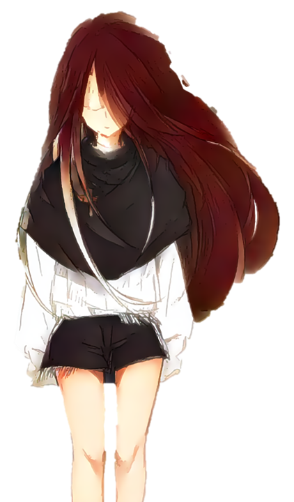
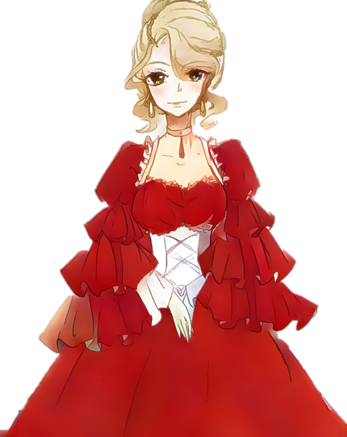
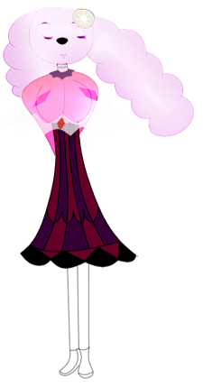
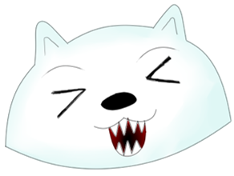

关于《粟牙》
这是一页可以走动的网页。作品名叫粟牙，主人公也叫粟牙。他是物理教师，随身带着八尺戒尺，和一包抽不完的和天下。聘书还剩三个月，雨下个不停。
对白来自森零制作组已经终止开发的《拾落星辰》（Starvior）。主人公在原作里叫奥伦。这一页把奥伦和作品名改成了粟牙，场景是原作 Alpha 里能走进去的病房、三楼走廊、后院和画中世界。
立绘是泺罗画的，行走图是 Diffileft 画的，曲子是 Noveky 作的。主人公在原作里叫奥伦，地图上用的是世原的样子。这一页里他叫粟牙。






地图块来自 RPG Maker，部分音效来自素材商店或曲库，原作声明不能拿到别的地方用，所以没有放进来。雨声是这页自己做的。
怎么玩
- 点场景里的名字，或点底部的词，去调查、说话、开门。
- Z、Enter、空格或点对话框，看下一句。X 把这一句一次读完。
- 画里有一条通道。走廊空地上可以踩点。
- Esc 打开菜单。进度记在这台浏览器里。
原作
制作 Buger404，导演 Wey，主笔 Shaye。人物与插画泺罗，Q 版与地图 Diffileft，音乐 Noveky。程序 Buger404，援助 YcMia。仓库使用 MIT 许可。详见本页的 NOTICE。